第四部分 集成数字逻辑器件
第4章 集成逻辑电路
TTL门的主要参数
下述参数均以非门为例.
- 传输特性:
- : 输出高电平最低值.
- : 输出低电平最高值.
- : 输入低电平最高值.
- : 输入高电平最低值.
- 阈值电压: .
- 传输特性曲线: 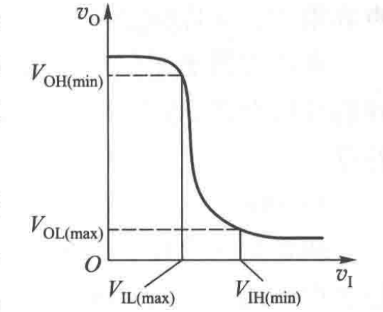
- 抗干扰能力: , 称为噪声容限.
- 功耗:
- 静态功耗: 稳定在某个状态时的功耗.
- 动态功耗: 高速工作(在0, 1间切换)时的功耗.
- 传输延迟:
- : 输出端下降沿时, 输入, 输出在达到 的时间差.
- : 输出端上升沿时, 输入, 输出在达到 的时间差.
- : 平均延迟时间.
- 负载能力:
- 扇出系数(fan out): 最多驱动同类门的个数.
- 灌电流与拉电流系数
改进的门电路
- OC输出门: 集电极开路的门.
- 其输出导线可直接相连, 构成"与"功能. 称为线与.
- 可承受大电压, 大电流, 但在输出端需接上拉电阻.
- 例: OC与非门. 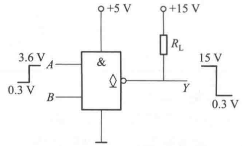
- 三态门: 除了0, 1输出, 还存在高阻态输出, 称为三态输出. 通常用 表示.
- 一般用使能端 或 控制, 非使能状态下输出高阻.
- 在 输出时, 可以认为该路被断开.
- 应用: 在计算机中, 用于进行与总线连接的控制. 因为同一时刻只允许总线与1个器件连接.
- 电路符号: 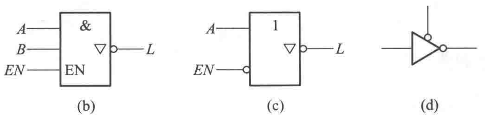
第10章(1) 可编程逻辑器件
可编程逻辑器件(PLD)概述
- 基本结构:
- 输入, 输入缓冲电路: 可形成输入的原变量与反变量.
- 与阵列, 或阵列: 用于形成SOP输出.
- 输出缓冲电路, 输出: 提供输出的原, 反变量. 同时提供输出反馈.
- 表示方法:
- 连接: 分为固定连接(点), 编程连接(叉), 不连接(正常交叉).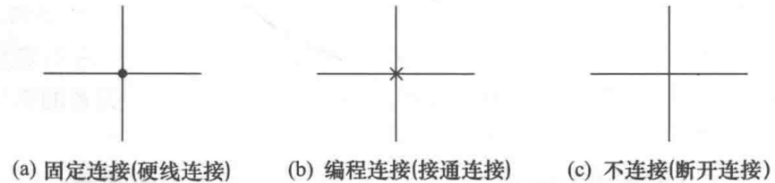
- 输入/输出反馈缓冲: 用同时输出原, 反变量的非门表示.
- 与/或门: 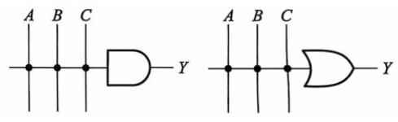
可编程逻辑阵列(PLA)
- 含与阵, 或阵, 输出SOP.
- "编程"过程即将 节点保留或抹除.
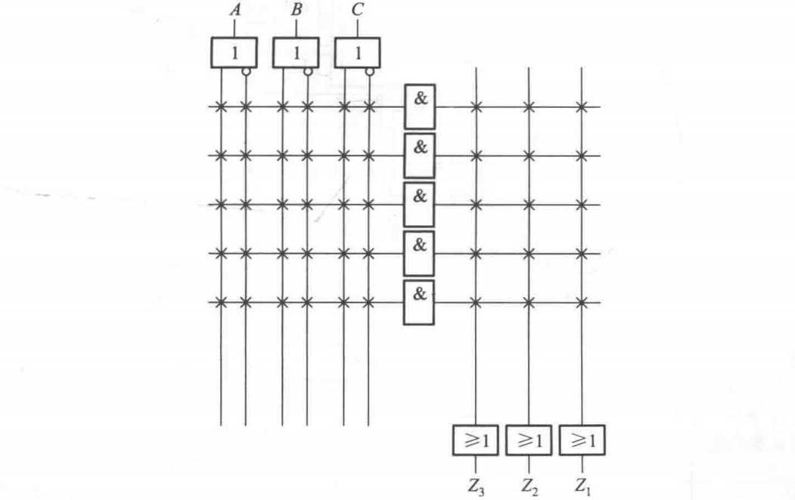
可编程阵列逻辑(PAL)
- 或阵固定, 与阵可供编程.
- PAL16L8:
- 16个输入: 10个外输入, 6个反馈输入.
- 8个外输出. ()
- 注1: 没有使用到的与门需要打叉.
- 注2: 需要求POS式再取非, 从而得到SOP低有效输出. (即与或非式)
- 注3: 第一个与门对应 端, 不使用时需打叉或置1.
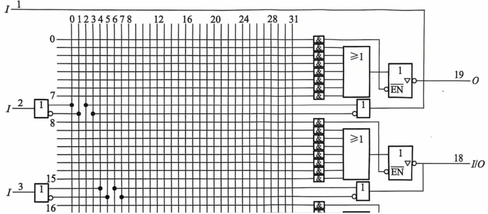
- PAL16R8: 含触发器输出.
- 输入端时钟相同.
- 输出端仍为 .
- 在输出阵列时, 需要对原阵列取反.
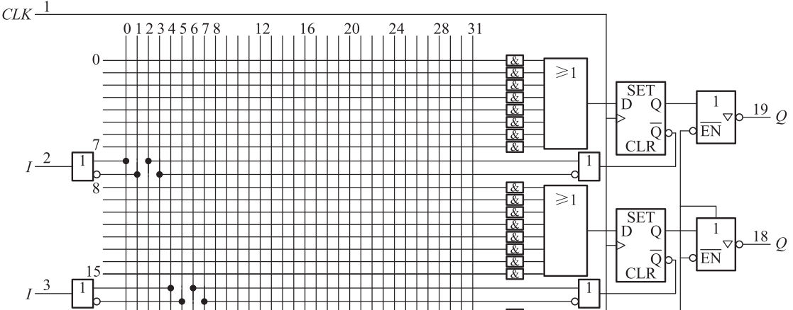
- 在输出阵列时, 需要对原阵列取反.
现场可编程门阵列(FPGA)
- 3个基本模块:
- 输入输出块(IOB).
- 可配置逻辑块(CLB).
- 包含LUT(查找表, 输出SOP), 关联逻辑.
- 可编程逻辑网络(PI).
其他可编程器件
- 通用逻辑阵列(GAL): 在PAL的基础上添加输出逻辑宏单元.
- 复杂可编程逻辑器件(CPLD): 在其他简单可编程逻辑器件上添加可编程内部连线.
第10章(2) 半导体存储器
RAM
- RAM: 随机存取存储器.
- 特性: 易失性. 下电后数据消失.
- 通常为2维/3维矩阵排列. 最小单元: bit. (1Byte = 8bit)
- 计算机中, 采用地址总线与地址译码进行寻址, 将数据输出到数据总线中.
- 地址总线的位宽决定系统存储器容量上限.
- 32位: 4GB寻址空间.
- 64位: 64GB寻址空间.
- 地址总线的位宽决定系统存储器容量上限.
- SRAM: 静态存储器.
- 由2个锁存器构成.
- 成本较高, 一般用于CPU内.
- DRAM: 动态存储器.
- 由MOSFET与电容构成.
- 电容会缓慢放电, 因此需要不断再生. (对电容反复充电)
- 成本较低, 广泛使用.
ROM
- ROM: 只读存储器
- 特性: 非易失性. 数据始终存在.
- 分类:
- 掩膜ROM: 内容固定ROM.
- PROM: 可编程ROM.
- EPROM: 可擦除可编程ROM.
- ROM: 电可擦除可编程ROM.
- Flash Memory: 闪速存储.
- ROM单元: 由MOSFET构成.
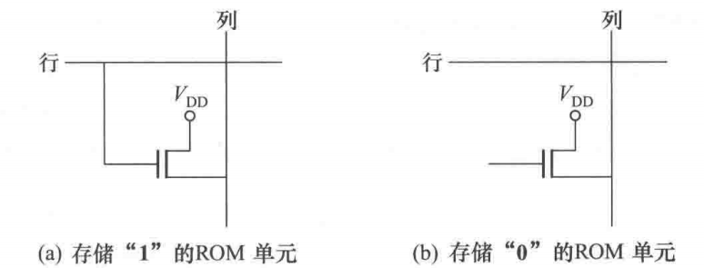 - ROM阵列: 由地址译码器与若干ROM单元构成.
- 对于可编程ROM, 可以编程得到输出的地址逻辑函数.
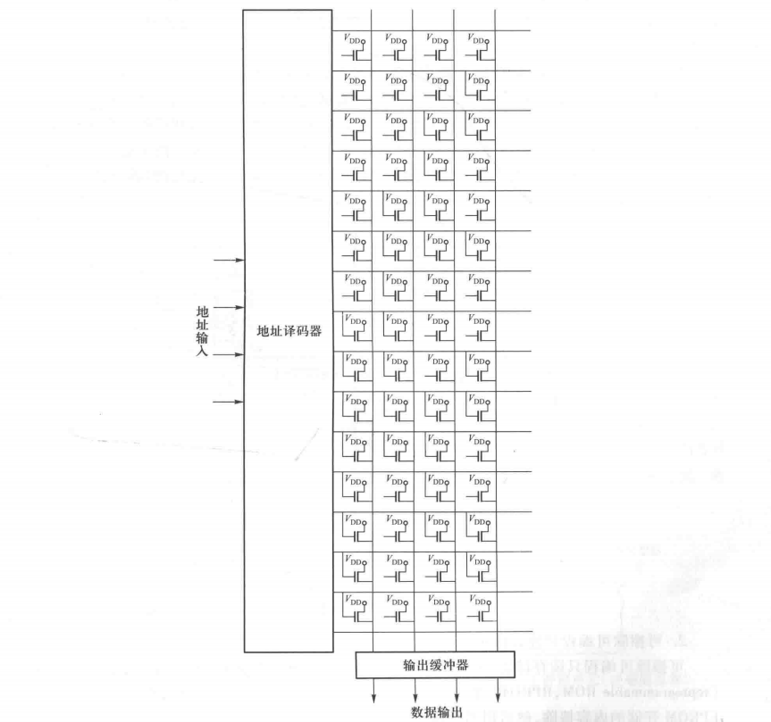
- 对于可编程ROM, 可以编程得到输出的地址逻辑函数.
容量扩展
- 位扩展: 即输出端扩展.
- 方法: 将输出总线进行并接.
- 例如: 64K * 4转64K * 8.
- 其中, 64Kbit, 输出直接指8bit.
- 电路图: 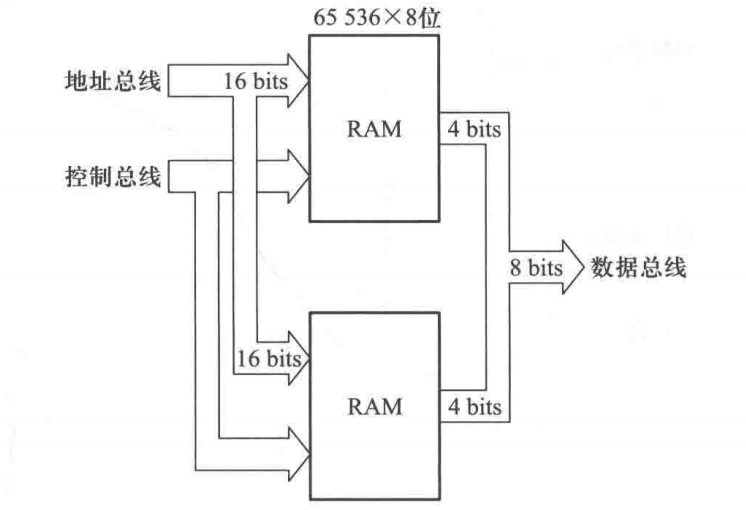
- 字扩展: 对输入端进行扩展.
- 方法: 利用最高位进行片选.
- 例如: 1M * 8转2M * 8
- 即输入端由20bit转21bit.
- 电路图: 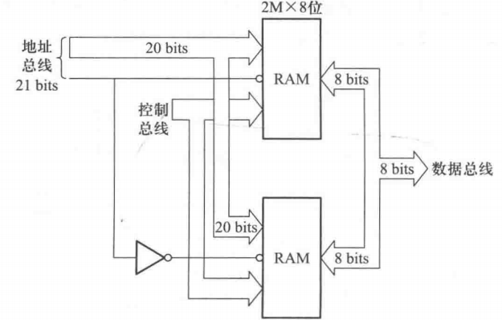
第11章 数模与模数转换
DAC: 数模转换
-
符号: 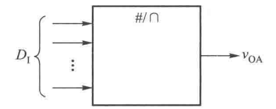
-
.
-
为上式的比例系数, 称为分辨力
- 亦可用 计算.
- S表示了LSB(最小二进制位, 00..01)的输出电压.
- 在DAC转换计算时, 将误差控制在 范围内.
-
DAC将会输出阶梯状信号, 经过低通滤波后形成平滑的模拟信号.
-
原理
- 开关树译码: 利用电阻的分压.
- 开关个数: , 电阻个数: . 随位数增加, 电路复杂度指数级增长.
- 电路图: (3位DAC) 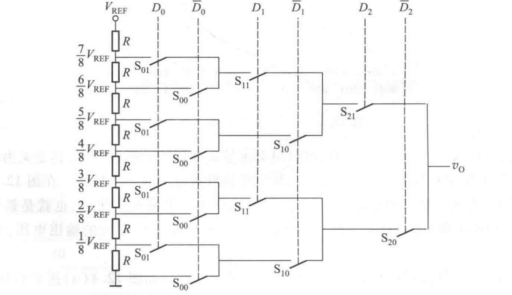
- 权电阻网络译码: 利用电阻的分流.
- 电阻个数: .
- . (注意反相放大器产生的负号)
- 电阻之间差异太大, 容易造成误差.
- 电路图: (4位DAC) 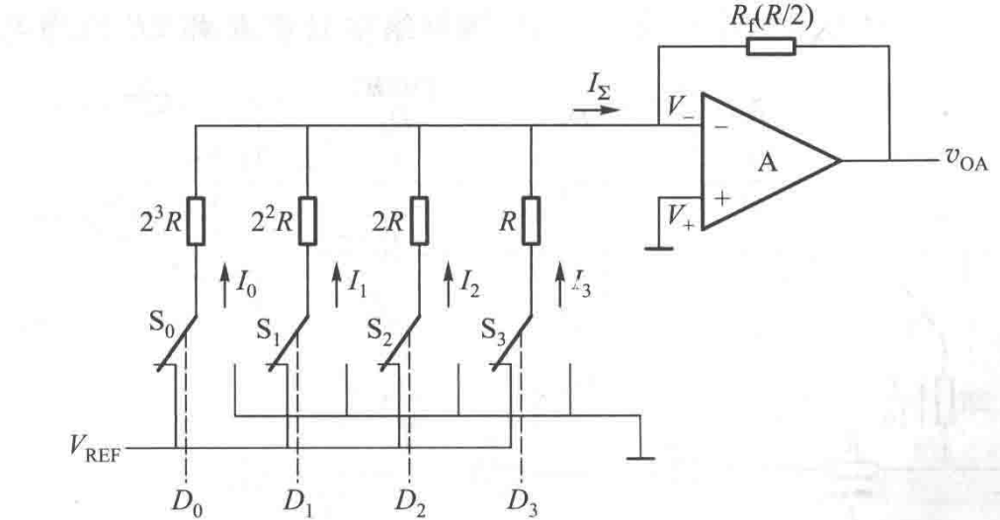
- 倒T型网络译码: 利用电阻网络的分流.
- 电阻个数: .
- 电阻的误差小, 但开关内阻仍然会引入误差.
- 电路图: (4位DAC) 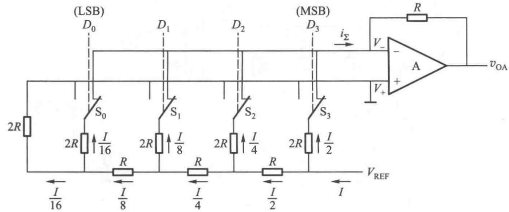
- 电流源型网络译码: 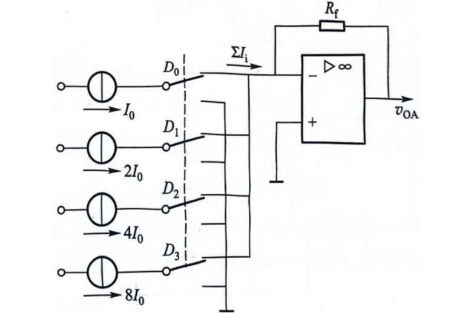
- 权电容译码: 利用电容进行分压.
- 电容比电阻制造更简单, 且精度更高.
- 应用最为广泛的方案.
- 电路图: 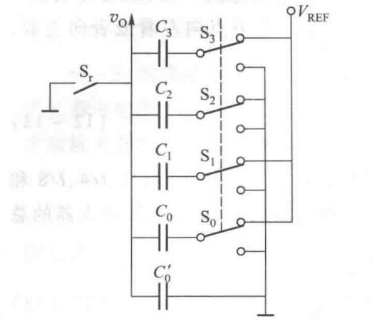
- 开关树译码: 利用电阻的分压.
-
技术指标:
- 分辨率: .
- 一般称为"N位分辨率"或"N位ADC".
- 转换精确度: .
- 转换速度: 输出电压的振幅 时, 认为达到稳态. 从初态到稳态的时间称为建立时间.
- 分辨率: .
ADC: 模数转换
- 符号: 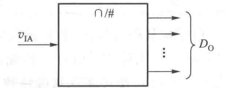
- 步骤: 采样, 保持, 量化, 编码.
- 采样频率满足 .
- 称为奈奎斯特频率.
- 原理
- 并行比较型: 利用分压网络, 电压比较, 数据缓存寄存器.
- 电阻个数: 个. 其中与地相连的电阻阻值为 , 用于四舍五入.
- 电压比较器个数: 个.
- 电路图: (3位ADC) 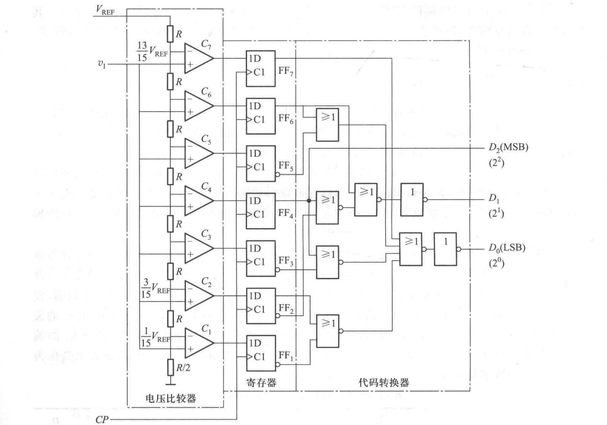
- 分级并行比较型: 将ADC分为高位(粗比较) 与低位 (细比较).
- 低位与高位之间, 通过减法器与放大器求出误差并放大.
- 电路图: (10位ADC) 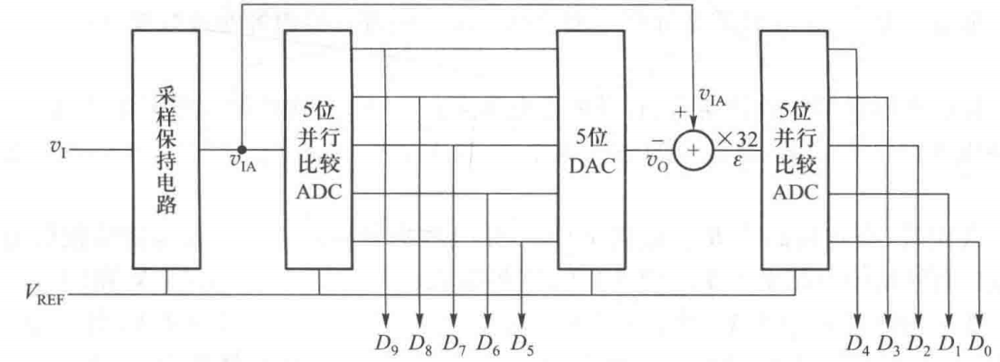
- 逐次逼近型: 利用二分法. 将 逐渐分为 进行比较.
- 在比较过程中, 需要花费 个时钟. (因为需要设置比较的初始值)
- 双积分型: 将电压通过积分器转换为时间, 通过计数器测量时间.
- 步骤:
- 接模拟电压, 电容在一个计数周期内充电. .
- 接参考电压, 电容放电. .
- 计时器在放电过程中计数. 当 时, 计数停止.
- 计数器中数字即为转换结果, 满足 .
- 优点: 积分可以消除噪声, 抗干扰能力强.
- 缺点: 时间长.
- 适用于低频/直流模拟信号. 数字万用表常常使用此ADC.
- 电路图: 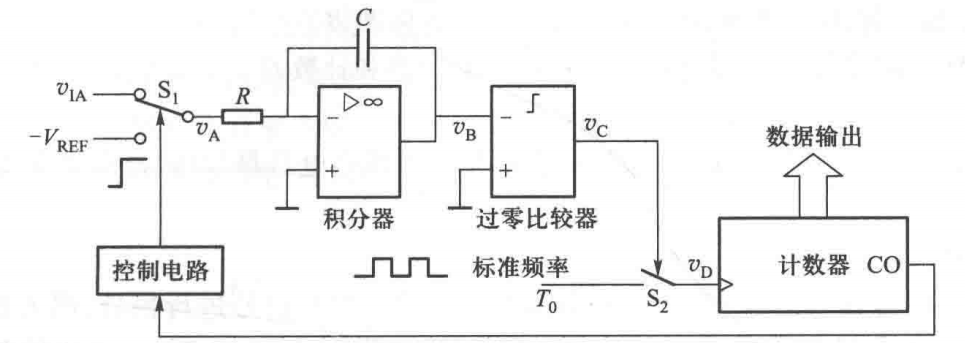
- 步骤:
- 并行比较型: 利用分压网络, 电压比较, 数据缓存寄存器.
- 技术指标: . 与DAC相同.
第12章 数字系统设计
- 设计方法: Top-Down方法(自上而下)
- 算法状态机流程图(ASM图): 包含几个部分:
- 状态框: 每个状态占用1个脉冲周期. 用方框表示.
- 判别框: 含1个入口与多个出口. 从属于入口状态, 不单独占用时钟(组合电路). 用菱形或其他多边形表示.
- 条件输出框: 由寄存器进行赋值或输出操作. 用圆形表示
- 与普通流程图的区别: 严格按照时钟节拍运行.

(完)